O mar que Minas ganhou não existia antes de 1963. É um lago feito pela mão de gente, com cidades dormindo no fundo, cânions de pedra nas bordas e a Serra da Canastra lá longe, onde nasce um rio famoso. Aqui está o Furnas de verdade.
O Lago de Furnas nasceu da usina hidrelétrica de Furnas, no Rio Grande, em Minas Gerais. A usina começou a operar em 1963, e a água foi tomando o vale até virar um lago de cerca de 1.440 quilômetros quadrados. É tão grande que o apelido pegou: o Mar de Minas. Fica no Sul de Minas e banha mais de trinta municípios.
Para fazer o lago, algumas cidades tiveram que ir para mais longe. Em Guapé, as comportas foram fechadas em 9 de janeiro de 1963, e em dez dias a água já cobria a parte baixa da cidade. A cidade nova foi reconstruída em 1964, num lugar mais alto, em forma de península cercada pela água. Na seca, as ruínas da igreja matriz às vezes reaparecem. E lá embaixo, mergulhadores que exploram a região de São José da Barra já encontraram uma rua inteira, casas quase intactas, uma ponte e até um ônibus, a cerca de oitenta metros de fundo.
Em volta do lago é Minas de verdade: cerrado, pasto, café e eucalipto. Em Capitólio, a água entrou entre paredões de quartzito, uma rocha dura, e hoje os cânions são o cartão-postal do lago, com cachoeiras caindo nas paredes. E ao fundo, no horizonte do jogo, fica a Serra da Canastra, onde estão as nascentes de rios importantes.
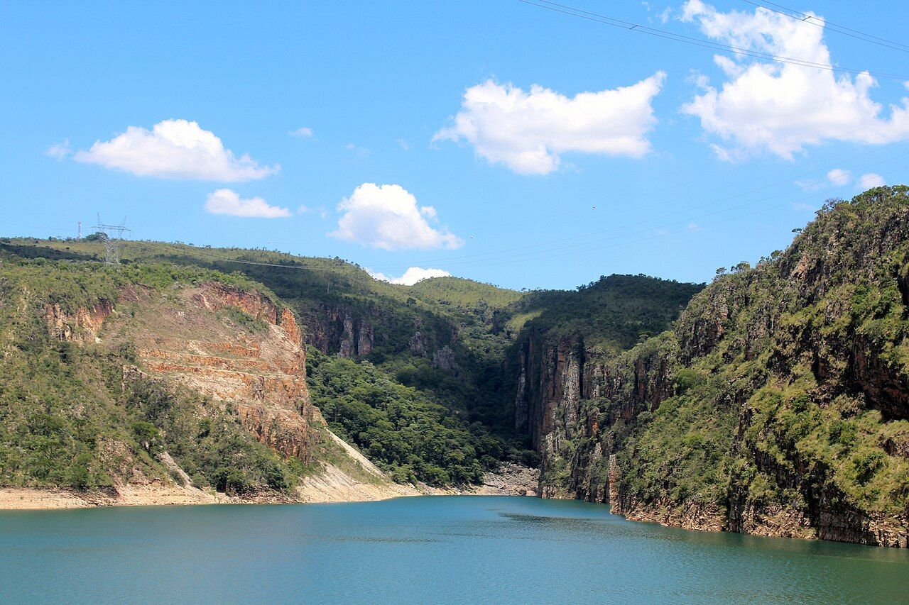
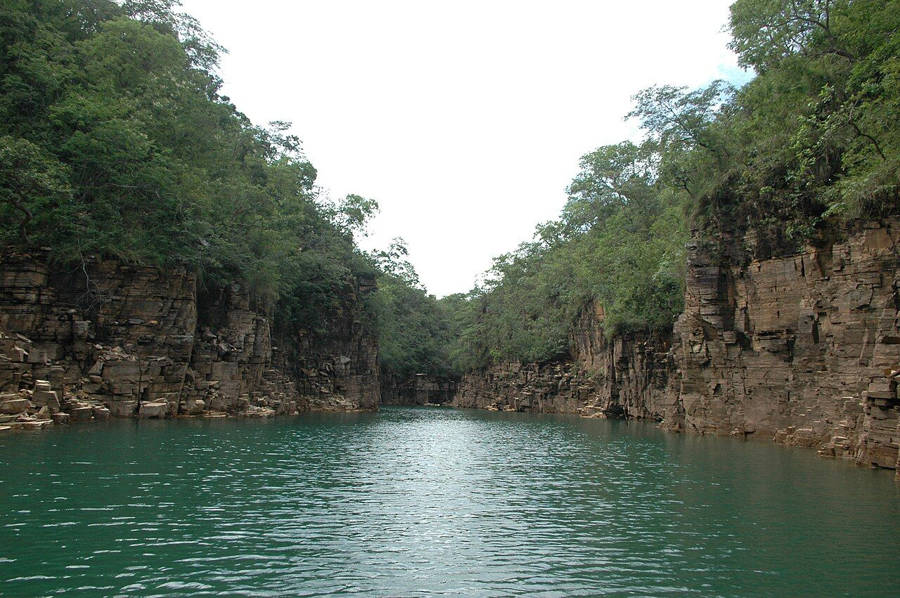
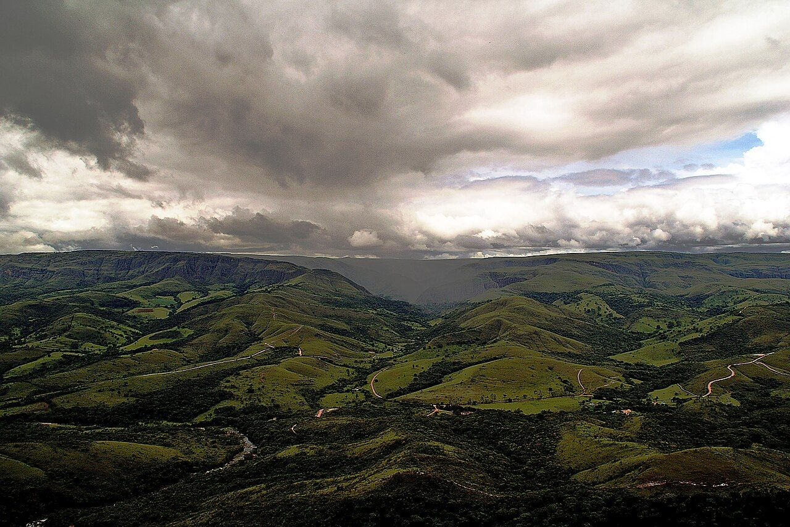
Quase tudo o que aparece desenhado no cenário existe de verdade em volta do Lago de Furnas.
É o nome das árvores mortas que ficam de pé numa represa depois da inundação. Os galhos expostos viram abrigo novo para bicho e planta, e estudos mostram que esse emaranhado ajuda na reprodução de vários peixes. Também embaraça rede e anzol.
Paredões de quartzito, uma rocha metamórfica, que a água esculpiu nas fraturas antigas da pedra. Os paredões têm de vinte a sessenta metros, segundo o Serviço Geológico do Brasil.
O parque nacional foi criado em 1972 e tem quase 198 mil hectares de Cerrado. Protege nascentes do Rio São Francisco, do Araguari e de afluentes da bacia do Rio Grande. A cachoeira Casca d'Anta, de 186 metros, é a mais famosa da serra.
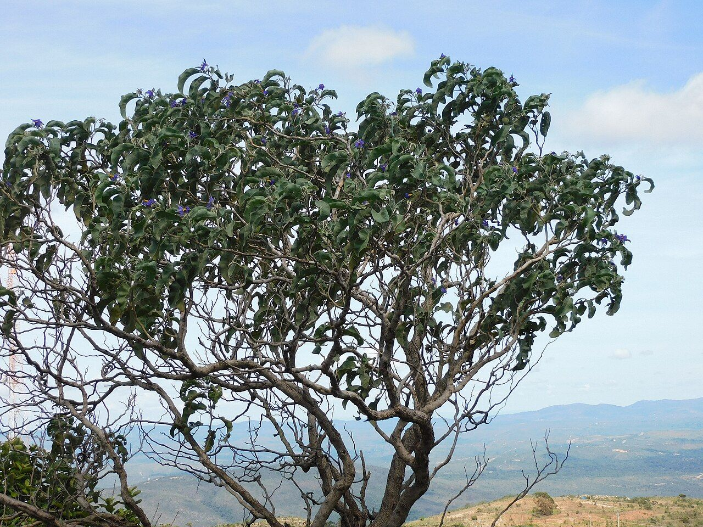
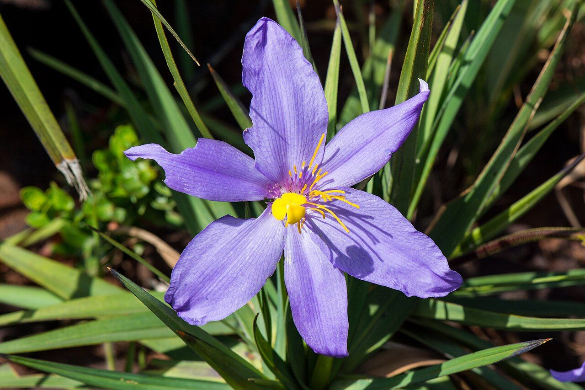
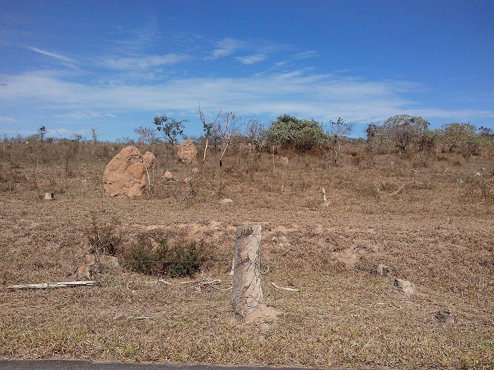
Dá o pequi, de uso largo na cozinha do Cerrado. Cresce no cerradão, uma mata de árvores de até quinze metros que fica entre o campo aberto e a floresta úmida.
Árvore do cerradão, de tronco torto e curto. O nome vem da cor do tronco, marrom avermelhado, igual a terra.
Arbusto de beira de estrada e pasto, de até uns cinco metros. O nome científico quer dizer "fruto de lobo": o fruto é o preferido do lobo-guará, que espalha as sementes pelo caminho.
Símbolo do Cerrado, conhecido pela florada e pela madeira nobre. Floresce na seca, de julho a setembro, e as flores atraem abelhas e beija-flores.
Planta do campo rupestre, o campo de pedra das serras, que vive em rocha e solo raso. Na Canastra ela forma campos inteiros, e rebrota fácil depois do fogo.
O montinho de terra dos cupins é dos desenhos mais comuns do Cerrado. Em noites quentes e úmidas de primavera, larvas de vaga-lume acendem a luz na superfície do cupinzeiro para atrair insetos, e a coruja-buraqueira gosta de pousar neles.
Não é daqui: vem da Austrália. As primeiras tentativas de plantio no Brasil foram no século 19, e para valer ele ganhou força no começo do século 20, na construção das ferrovias do Sudeste. Hoje Minas é o estado com mais eucalipto plantado.
O Sul de Minas é a maior região produtora de café do Brasil, com cafezais em morros entre setecentos e pouco mais de mil metros de altitude.
Raça de origem indiana, da região de Ongole, que chegou ao Brasil há mais de cem anos. Aguenta calor, parasita e clima variado, e é conhecida pela rusticidade e pela carne.
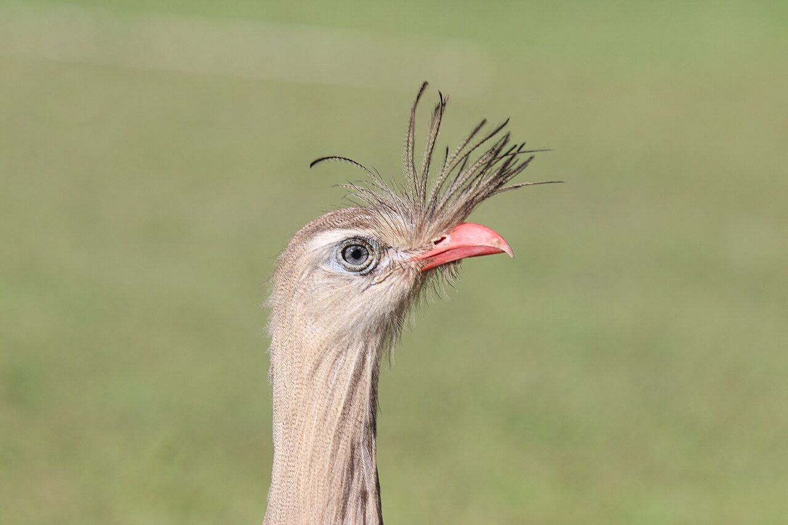
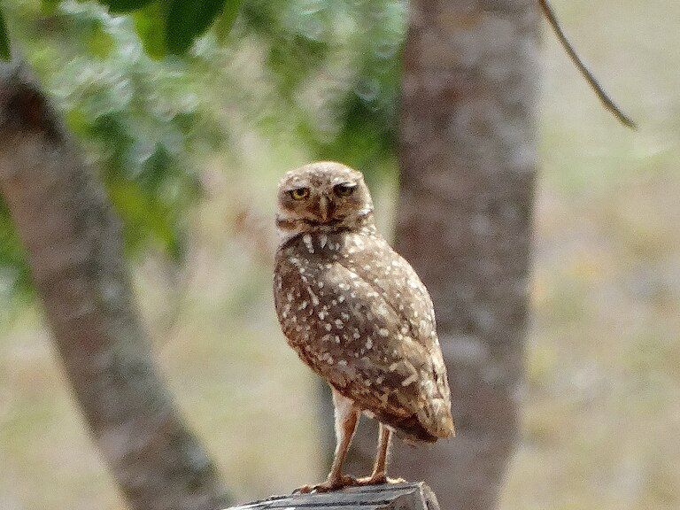
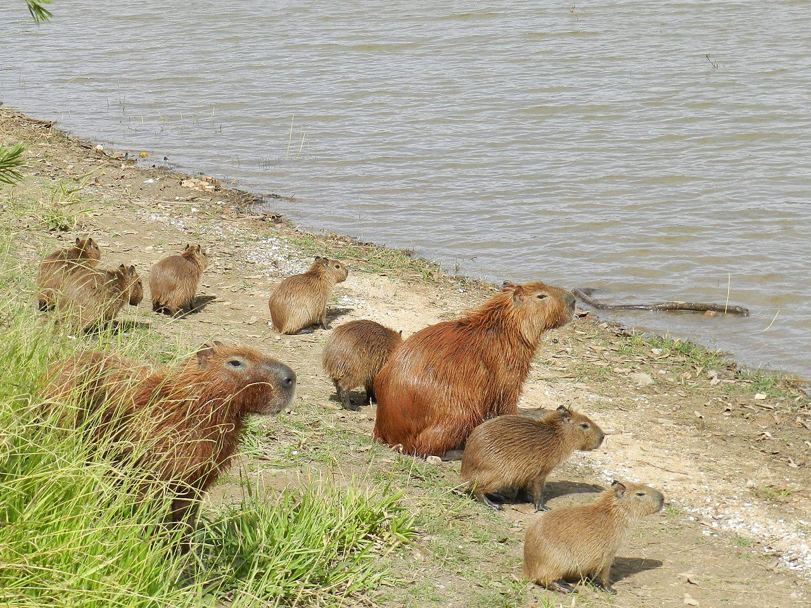
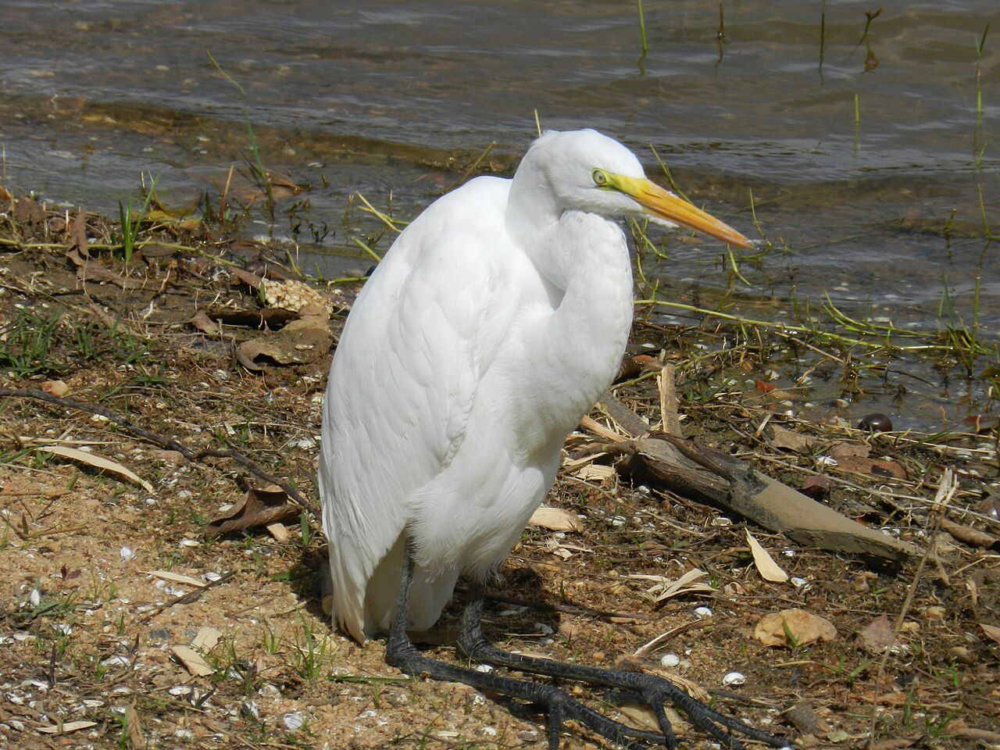
O canto dela é o mais conhecido do Cerrado e se ouve a mais de um quilômetro. Come inseto e bicho pequeno, de lagarto a cobra e roedor, e faz o ninho de gravetos numa árvore baixa, de um a cinco metros.
Coruja que acorda de dia e também de noite, de campo aberto. Cava a própria toca, mas aproveita as abandonadas por outros bichos, como o tatu, e costuma ser vista em cupinzeiros e postes.
Constrói o ninho de barro molhado misturado com fibra e capim, e a obra é do casal: os dois levam o barro aos poucos, em camadas, e o ninho tem uma parede por dentro, que separa a entrada do quarto dos ovos. Na falta de galho firme, vale poste e telhado.
O maior canídeo selvagem da América do Sul. Sai ao entardecer e anda por até dez horas atrás de comida, sozinho. Come bicho pequeno e fruta, sobretudo a da lobeira.
Ave de rapina de campo aberto, cerrado e beira de estrada. Come carniça e bicho atropelado, mas também inseto, roedor, réptil e ovo. O casal faz ninho de dois ou três ovos e divide o cuidado dos filhotes.
Plana com as asas esticadas. Vive de carcaça e ajuda a limpar o campo e a beira de estrada.
A arara azul e amarela escolhe um parceiro para a vida toda e costuma fazer o ninho em oco de tronco. Vive em buritizais e matas de galeria dos cerrados.
O maior roedor do mundo, e vive perto da água.
Vive em rios e lagos de água doce, em quase todo o Brasil, e come principalmente peixe. Num estudo em Minas, havia peixe em quase todas as fezes analisadas. Caça, poluição e destruição da mata da beira são as ameaças.
Pesca devagar: anda na água rasa, num passo calmo, e dá o bote rápido e certeiro. Come sobretudo peixe, mas também anfíbio, crustáceo e inseto de água.
Mergulha atrás de peixe. As penas dele não têm a cera que as impermeabiliza, então molham e pesam, o que ajuda a afundar. Por isso fica horas de asas abertas num tronco ou pedra, secando ao sol e ao vento.
Espera num poleiro alto sobre a água limpa, mergulha no peixe que vê e volta para o poleiro, onde bate a presa numa superfície dura antes de engolir.
Nem todo peixe do lago é solto: parte é criada em gaiolas flutuantes. Em Guapé, a criação de tilápia no Lago de Furnas é feita assim, e o governo demarcou os primeiros parques de criação nas baías dos braços do Rio Grande e do Sapucaí.
Os doze peixes do Furnas no jogo, do lambari ao rei. Quando o nome popular vale para mais de uma espécie, o cartão avisa. Vários não nasceram no lago: chegaram com gente, e os cartões dizem quem.
Lambari é nome de várias espécies pequenas, de dez a vinte centímetros. Vive em cardume, come inseto que cai na água, bichinho e pedaço de planta, e às vezes sobe à superfície para se alimentar. É comida de peixe maior e de ave, e por isso serve de isca viva.
Peixe africano que os egípcios já conheciam por volta de 2000 a.C. A fêmea guarda os ovos na boca. Chegou ao Brasil em 1971 e hoje é muito criada em tanque-rede. Pescadores de Furnas contam que a tilápia-capim foi uma das primeiras a entrar no lago, nos anos 1950, e que a do Nilo foi notada por volta de meados dos anos 1990.
Bagre de uns quarenta centímetros e até três quilos, que come de tudo, principalmente inseto de água. Tem espinho nas nadadeiras, e a ferroada dói e incha. É nativo das bacias do Paraná e do São Francisco e muito apreciado na pesca esportiva e na cozinha.
Também chamada de piau-verdadeiro ou piavuçu. Come de tudo, de semente e vegetal a invertebrado e peixe pequeno. É migradora e prefere água funda, e vive nas bacias do Paraná, do Prata e do São Francisco.
Chega a setenta centímetros e quatro quilos. Tem dentes afiados, cortantes, e come peixe pequeno. O nome vem do tupi, tare'ira. Tem o dorso preto, o ventre branco e manchas escuras no corpo, e não tem a nadadeira de gordura.
Também chamada de pescada-amazônica: é uma pescada de rio, de origem amazônica. Na represa do Jaguari, em São Paulo, ela virou a espécie mais abundante em cerca de dez anos, e a diversidade de peixes nativos caiu, segundo um estudo da Unesp.
Descrito como espécie só em 2006. Os tucunarés introduzidos em reservatórios do Sul, Sudeste e Nordeste eram tomados por outras espécies e são, na verdade, o tucunaré-amarelo e o azul. Em Furnas, mais da metade dos pescadores ouvidos num estudo citou o tucunaré como peixe de fora. Como é caçador de peixe, pode reduzir os peixes do lugar.
Parente grande da traíra: o nome do gênero vem do grego hoplon, "arma". Come outros peixes, chega a uns setenta e cinco centímetros e quatro quilos, e a espécie leva o nome do médico e cientista João Batista de Lacerda.
Come peixe e crustáceo. Passa de um metro, e o maior registrado pesou mais de trinta quilos. Migra dentro dos rios das bacias do Paraná, Paraguai e Uruguai. É um dos peixes mais procurados na pesca esportiva, e o pesque e solte funciona bem se o peixe ficar pouco tempo fora da água.
Peixe de rio de porte médio, de água clara e mata preservada na beira, que chega a uns cinquenta centímetros e dois quilos e meio. O gênero Brycon come de tudo, de flor, folha, fruto e semente a inseto. Vive nas bacias do Alto Paraná, do São Francisco e do Alto Tocantins.
Bagre gigante de bigodes longos das bacias do Paraná e do Paraguai. Chega a mais de um metro e quarenta de corpo e está na lista de espécies quase ameaçadas da IUCN, a União Internacional para a Conservação da Natureza.
Um dourado-rei é invenção do jogo, mas o dourado de verdade já é um peixe de respeito: passa de um metro, pode passar de trinta quilos e é alvo da pesca esportiva. O nome do gênero, Salminus, vem provavelmente do latim para salmão. O rei é só um dourado que a gente nunca viu.
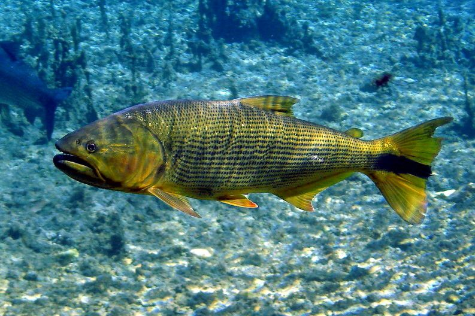
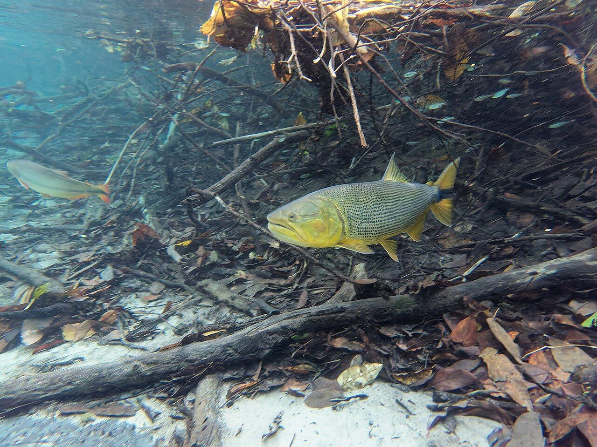
O lobo-guará é considerado Vulnerável na lista brasileira de espécies ameaçadas. Estima-se que existam cerca de 24 mil no país, a maioria no Cerrado, que vem perdendo espaço para lavoura, pasto, cidade e estrada. A região da Serra da Canastra tem uma das maiores densidades da espécie.
É lá que trabalha o Programa Lobos da Canastra, do Instituto Pró-Carnívoros. O trabalho começou em 2004, como uma pesquisa de campo sobre o lobo-guará no Cerrado, com dez instituições, e cresceu até virar um programa de conservação. Já foram equipados 78 lobos com colar de rastreamento, e a caça ao lobo na região, que chegava a uns seis bichos por ano, ficou rara depois que o projeto conversou com os fazendeiros.
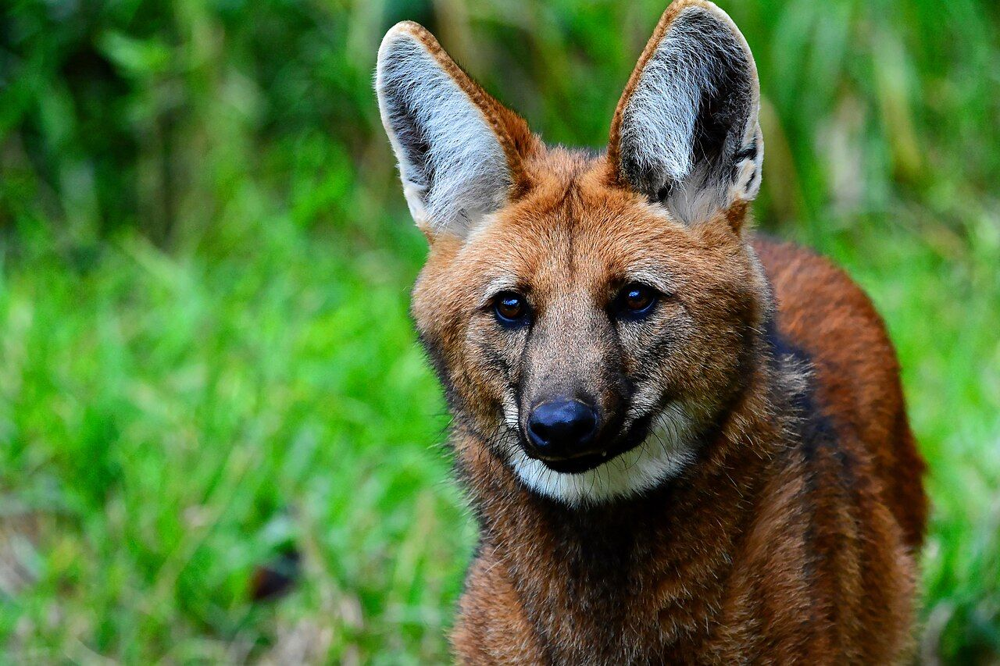
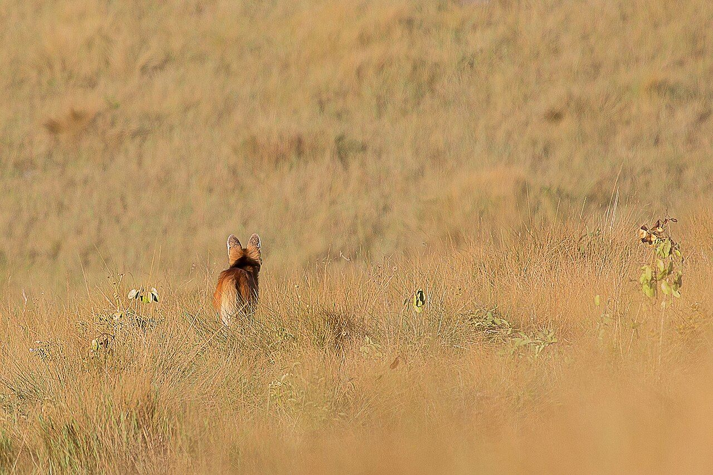
O programa também foi à escola: fez oficinas com cerca de cem professores de São Roque de Minas e Vargem Bonita, levou o Cine-Lobo para as praças e as fazendas e criou um lobo mascote para conversar com as crianças. Proteger o lobo é proteger o campo inteiro: a lobeira, que ele planta pelo caminho, e tudo o que vive junto dela.
Quer conhecer? O programa está em procarnivoros.org.br e o parque nacional, na página do ICMBio.
Em Minas Gerais, entre 1º de novembro e 28 de fevereiro vale a piracema, o defeso do peixe de rio: nesse período a pesca de espécie nativa é proibida em represas como Furnas. Vale confirmar as regras do Instituto Estadual de Florestas antes de pescar.
Tilápia e tucunaré não são daqui, e peixe de criação não vai para o lago. O dourado é peixe de soltar, e quanto menos tempo fora da água, mais chance ele tem de seguir vivo.
E na hora de passear nos cânions de Capitólio, respeite os paredões: a pedra tem fratura, a cachoeira desgasta a base dela, e a Polícia Civil atribuiu a queda de um bloco em 2022 a esse processo natural.
Todas do Wikimedia Commons, com licença que permite uso comercial. Foram reduzidas para a página.


.jpg){kind=link}
.jpg){kind=link}


.jpg){kind=link}


emBonito.jpg){kind=link}

.jpg){kind=link}